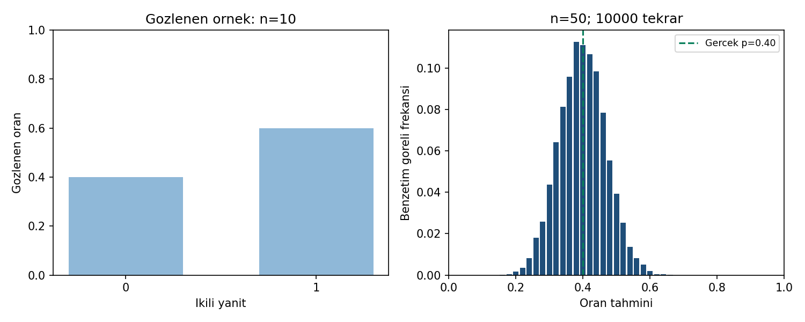

07 / NOKTA TAHMINI
Bir oran, ne kadar değişebilir?
10 yapay ikili yanıt + 10.000 kayıtlı benzetim tekrarı
Sorudan yönteme
On yanıtın altısı olumluysa örneklem oranı 0,60 olur. Başka bir örneklemde aynı oranı bulmayı bekler miyiz?
Örneklem oranı p̂ = X/n; yerine koyma standart hatası √[p̂(1−p̂)/n]. Benzetimde yanlılık, varyans ve MSE farklı soruları yanıtlar.
Gör, karşılaştır, yorumla

On yanıtta p̂ = 0,60 ve yaklaşık SE = 0,154919. Ayrı Binom(50; 0,40) benzetiminde ampirik MSE 0,00484828, kuramsal MSE 0,0048’dir.
On yanıt ile 10.000 benzetim tekrarı iki ayrı veri yapısıdır. Tekrarlanan simülasyonlar gerçek katılımcı sayısını artırmaz. Aynı CSV’yi kullanın; yeni R çekimlerinin Python çekimleriyle aynı olması beklenmez.
21 referans değerinin tamamı
Gösterim yuvarlatılmıştır; kodlar tam duyarlıklı CSV’yi kullanır.
| Grup | Ölçü | Değer |
|---|---|---|
| gozlem | hacim | 10 |
| gozlem | olumlu | 6 |
| gozlem | olumsuz | 4 |
| gozlem | oran | 0.6 |
| gozlem | yaklasik_se | 0.1549193338 |
| gozlem | yaklasik_varyans | 0.024 |
| p_hat_060 | se_25 | 0.09797958971 |
| p_hat_060 | se_400 | 0.02449489743 |
| benzetim | tekrar_sayisi | 10000 |
| benzetim | orneklem_hacmi | 50 |
| benzetim | gercek_oran | 0.4 |
| benzetim | merkez | 0.398418 |
| benzetim | yanlilik | -0.001582 |
| benzetim | varyans_B | 0.004845777276 |
| benzetim | varyans_Beksi1 | 0.004846261902 |
| benzetim | ampirik_se | 0.06961509823 |
| benzetim | mse | 0.00484828 |
| benzetim | mse_ayrisimi | 0.00484828 |
| benzetim | kuramsal_yanlilik | 0 |
| benzetim | kuramsal_se | 0.0692820323 |
| benzetim | kuramsal_mse | 0.0048 |
Aynı veri, üç yazılım
ZIP’i tamamen ayıklayın. Çalışma klasörü b07/ornek-01 olmalıdır. Kodlar bilgisayarınızda çalışır.
Python
py cozum.py --check --grafikNumPy, pandas, SciPy ve Matplotlib gerekir. Beklenen: 21 kontrol değeri eşleşiyor.
R / RStudio
Rscript --vanilla cozum.R --check --grafikStandart R yeterlidir. RStudio konsolunda source("cozum.R") yalnız hesapları gösterir; otomatik kontrol için:
kontrol_et(sonuc, read.csv("beklenen-sonuclar.csv", stringsAsFactors=FALSE))IBM SPSS 29 · çalışma kabulü bekliyor
SPSS’te çalışma klasörünü b07/ornek-01 yapıp analiz.sps çalıştırın; bölüm rehberindeki tabloları karşılaştırın.
Önce tahmin et, sonra açıkla
p̂ sabitken n, 25’ten 400’e çıkarsa yaklaşık standart hata nasıl değişir?
Gerekçeli yanıtı göster
Örneklem hacmi 16 katına çıktığı için standart hata dörtte birine iner: 0,097980 → 0,024495.
Doğrulama durumu
| Ortam | Durum |
|---|---|
| Python | 21 referans değeri; grafik üretimi ve hatalı girdi kontrolleri geçti. |
| R 4.3.3 | 21 referans değeri ve Python–R sonuç karşılaştırması geçti. |
| IBM SPSS | Syntax hazır. Gerçek SPSS çalıştırması ve çıktı kabulü bekliyor. |
17 Eylül 2026. Sayısal uyum, araştırma varsayımlarının sağlandığını kanıtlamaz.